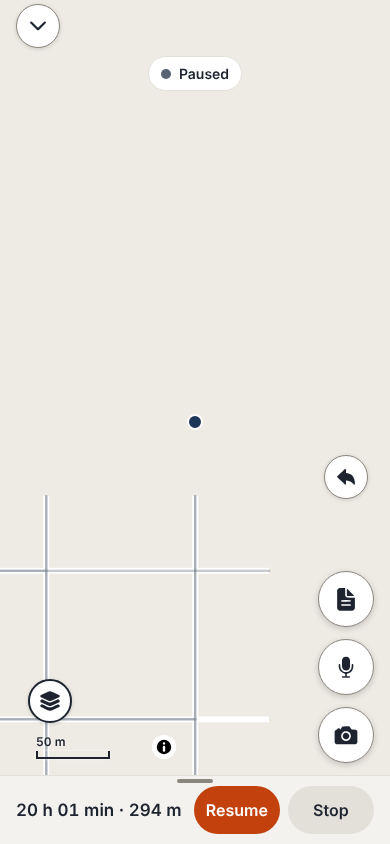
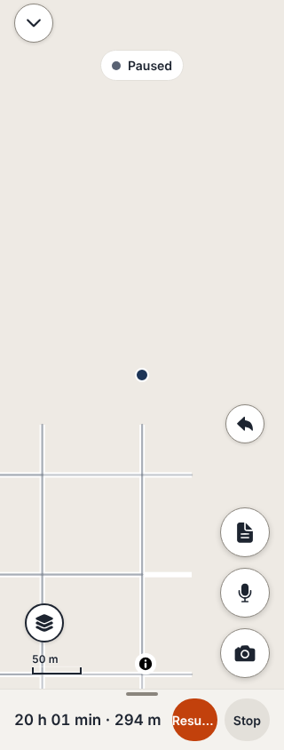
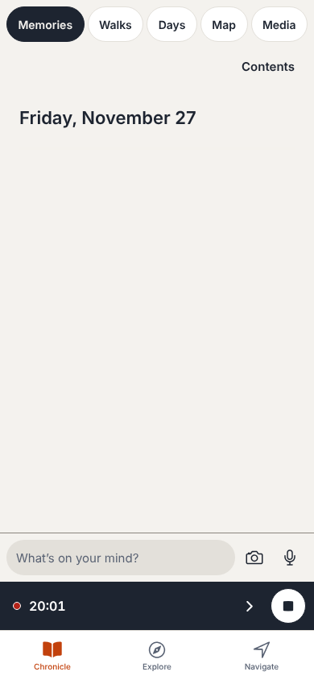
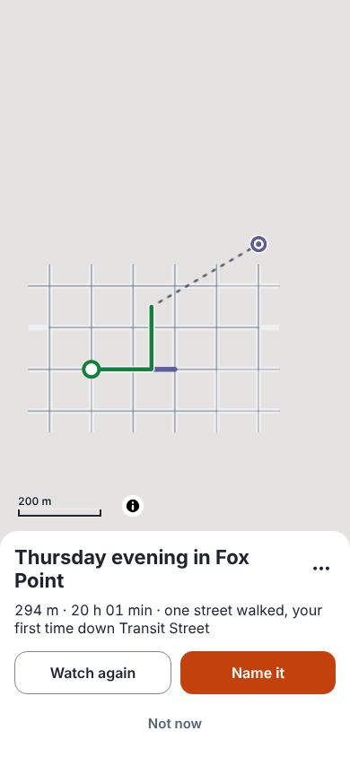
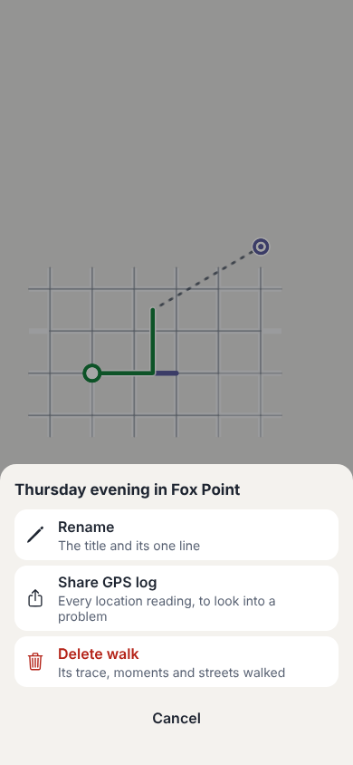

The owner's ask (2026-11-27): "sometimes I forget to stop a walk and there go hours and hours of the last activity ... do you wanna trim this walk down so that it's not 20 hours of nothing till the last known point". The befores are the real web build at 390 x 844 (device scale 1): a walk on the e2e's street grid, left running, opened again 20 hours later about 400 m away. The seeded walk itself lasted about a minute, so the trimmed card reads "1 min"; a real one reads its own time. Drawn over the befores where only part of the screen changes.
Today at 390 px: paused the next day

Holding Stop ends the walk now: 20 h 01 min, its end where the phone was the next day.
Recommended at 390 px: Stop held, the ask recommended
This walk went quiet at 8:35 PM yesterday.
End it at 8:35 PM
Keep it all
Shown only when the walk's last activity (walking on, a ride, a capture, a Resume) is 30 min or more before the hold; otherwise Stop ends as today. Either button ends the walk and the replay follows. Nothing else changes on the screen.
Recommended at 320 px

This walk went quiet at 8:35 PM yesterday.
End it at 8:35 PM
Keep it all
The buttons stack where the two do not fit side by side.
Today at 390 px: the recording bar over Chronicle

Recommended: the bar's held Stop asks the same recommended
This walk went quiet at 8:35 PM yesterday.
End it at 8:35 PM
Keep it all
The same card and words, above the bar, where the bar's discarded-memo pill sits today. A choice here, not a trip to the walk screen.
After "End it at 8:35 PM": the replay's card

294 m · 1 min · one street walked, your first time down Transit Street
The end mark at the corner where it went quiet; the dotted line to the next day's spot is gone; the time stops at 8:35 PM. The same on Chronicle's row ("Nov 26, 2026 · 294 m · 1 min") and in the day. The raw readings stay stored and Share GPS log still holds them.
Today at 390 px: a finished walk's More (⋯)

Recommended: one row for walks already kept recommended
Thursday evening in Fox Point
RenameThe title and its one line
End it where it went quietAt 8:35 PM on Nov 26; the hours after it leave the walk
Share GPS logEvery location reading, to look into a problem
Delete walkIts trace, moments and streets walked
Cancel
The row (dashed outline here only) shows only on a walk with a quiet end of 30 min or more, on the replay card's ⋯ and Chronicle's walk row. A tap asks once more in the same sheet with the Stop's words and buttons ("End it at 8:35 PM", Cancel). After it the row is gone.
The other shape: ended there by itself not recommended
Ended at 8:35 PM, when it went quiet Undo
294 m · 1 min · one street walked, your first time down Transit Street
No question: a held Stop on a quiet walk ends it at the quiet point, and the replay opens with an Undo pill (the empty-walk drop's pattern, EW1). One tap fewer, but it decides for the walker, and an Undo missed is a trim kept.
What changed.
A held Stop (the walk screen's, and the recording bar's) on a walk that went quiet 30 min or more before asks once: "This walk went quiet at 8:35 PM yesterday." End it at 8:35 PM, or Keep it all. Quiet means after the last walking on, ride, capture or Resume; a long sit in the middle of a walk is never the end.
Ending there moves the walk's end to that time: the replay, its card, Chronicle's row and the day read the walk up to it; the readings after it stay stored (truth) and are left out when the walk is read (Truth vs cache).
A walk already kept with a quiet end gets one row in its More (⋯): End it where it went quiet.
What it does not do. No notification and no reminder while the walk runs (Never: "Nagging"; notifications are the owner's, 0157). Nothing ends a walk by itself; the walk stays open until Stop. No count, no number of hours in the words, no accent colour beyond the one filled button. Nothing mid-walk is cut: the lows stay in (0001). The replay's beats and words are untouched.
Rests on: VISION.md Never "All-day tracking" (0036), "Editing out the lows", "Nagging"; Always "Moments and the trace are truth", "Restraint"; decisions 0220 (Pause, then Resume or Stop), 0048 (the bar's held Stop), 0071 (a break over 30 min is not a gap). Precedent: Apple Watch's End Workout Reminder (verified); Strava's Crop, AllTrails' crop of a recording's end, Garmin Connect's Trim Activity (unverified).